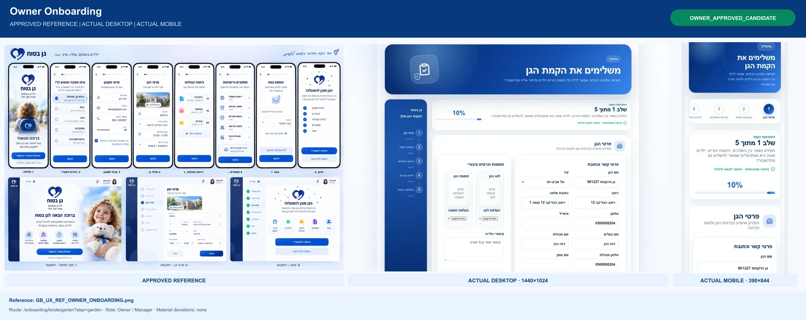
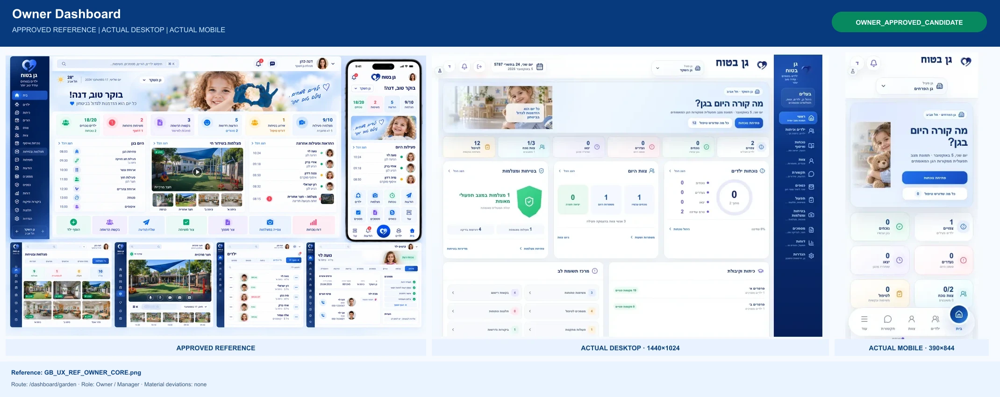
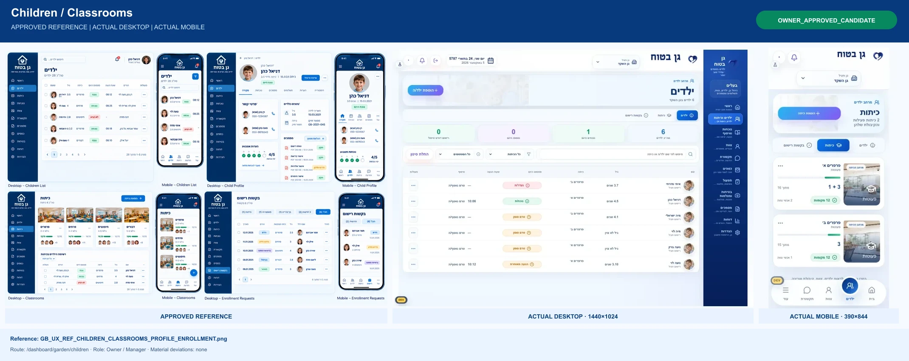
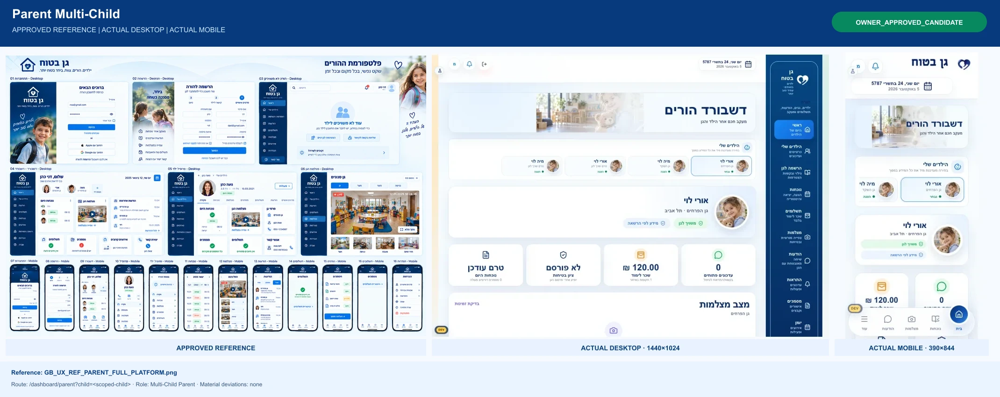
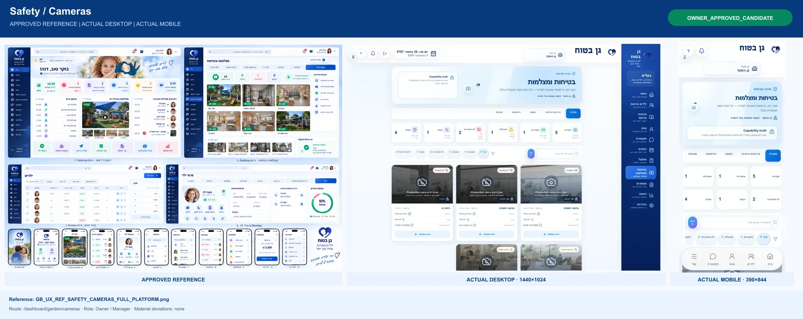
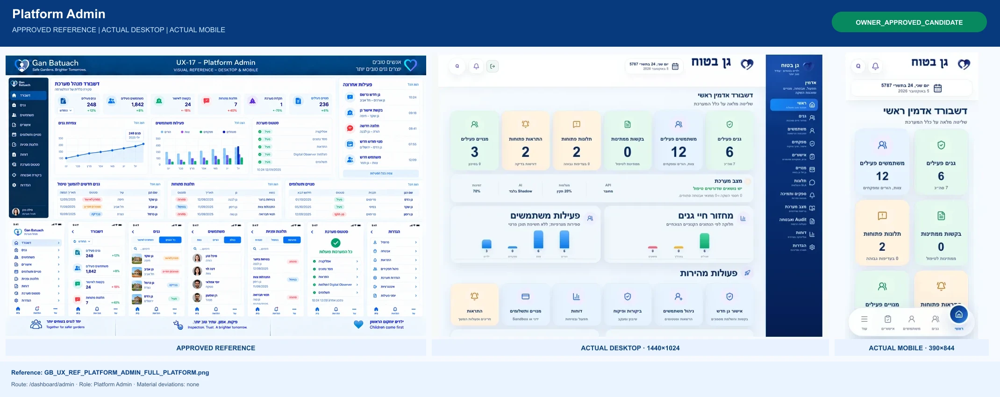
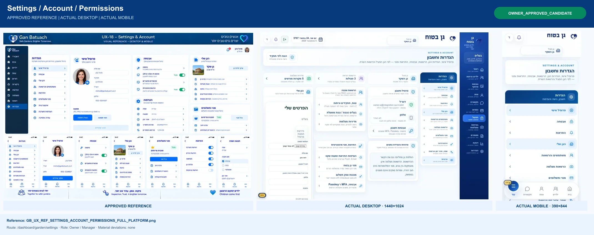

Owner Onboarding
OWNER_APPROVED_CANDIDATE · /onboarding/kindergarten?step=garden · Owner / Manager

Eight owner-driven comparison boards. Actual Development screenshots only.
OWNER_APPROVED_CANDIDATE · /onboarding/kindergarten?step=garden · Owner / Manager

OWNER_APPROVED_CANDIDATE · /dashboard/garden · Owner / Manager

OWNER_APPROVED_CANDIDATE · /dashboard/garden/children · Owner / Manager

OWNER_APPROVED_CANDIDATE · /dashboard/parent · Assigned Parent
OWNER_APPROVED_CANDIDATE · /dashboard/parent?child=<scoped-child> · Multi-Child Parent

OWNER_APPROVED_CANDIDATE · /dashboard/garden/cameras · Owner / Manager

OWNER_APPROVED_CANDIDATE · /dashboard/admin · Platform Admin

OWNER_APPROVED_CANDIDATE · /dashboard/garden/settings · Owner / Manager
